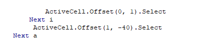
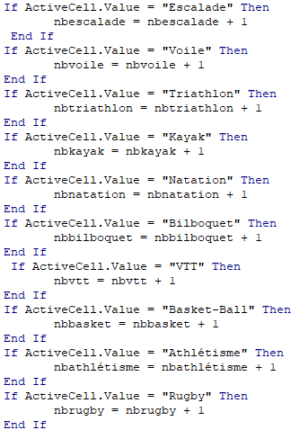
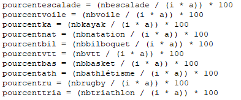
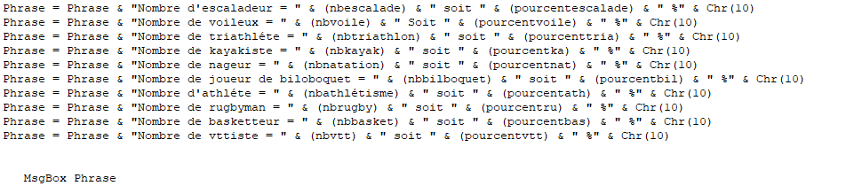

I- Lecture des cellules
I.1- Lire une cellule
Pour lire une cellule, il faut utiliser la commande ActiveCell.Value pour mon cas puisque l’on voulais lire le contenu des cellules. Pour d’autres cas des commandes comme ActiveCell.Color ont dut être utilisé afin de déterminer la couleur des cellules. La commande ActiveCell.Value permet donc de lire le contenu de la cellule sur laquelle nous nous trouvons. Pour afficher son contenu nous avons utilisé la commande MsgBox qui fait apparaître une fenêtre avec un message dessus. Par exemple, si l’on met MsgBox «coucou», une fenêtre avec coucou marquer dessus apparaîtra lorsque l’on exécutera le programme.
I.2- Se décaler de cellule en cellule
Tout d’abord nous avons sélectionner la cellule dont nous voulons commencer grâce à la commande Range («coordonnées de la cellule de départ»).Select. Ensuite, pour pouvoir lire toutes les cellules, nous devions faire en sorte de nous décaler d’une cellule a l’autre. Pour cela nous avons utilisé la commande ActiveCell.Offset («0 ,1»).Select qui nous permet de nous déplacer sur la cellule de droite.
De plus nous avons déclarer de nouvelle variable, i et a qui nous permettrons de compter le nombres de lignes et de colonnes dans lesquelles nous nous décalons.

Grâce à la commande for to, on créé une boucle et les variables choisis s’incrémentent de 1 à chaque fin de boucle

II- Compter les cellules au contenu identique
II.1- Pour chaque contenu de cellules possible, compter leurs nombres d’apparitions
Pour cela nous allons utiliser If then ce qui nous permet de faire en sorte que si la valeur de la cellule sur laquelle nous sommes est la même que celle que nous avons déclaré alors le nombre de cette valeur est incrémenter de 1. Il faut faire cela pour chaque contenu de cellule possible et il faut donc aussi déclarer les variables nombre de contenu identique et s’assurer qu’elles soient égales à zéro au début des boucles.
II.2- Déterminer le pourcentage d’apparition d’une valeur
Maintenant que nous avons le nombre de chaque valeur qui apparaît, il nous suffit de diviser ce nombre par le nombre de cellule sur lesquelles nous sommes passés et de multiplier ce résultat par cent afin d’obtenir le pourcentage d’apparition d’une valeur. Le nombre de cellules sur lesquelles nous sommes passés est égale à la valeur maximale de i multiplié par la valeur maximale de a.
Il faut mettre le calcul des pourcentages dans la boucle For a = x to y sinon cela ne marchera pas puisque i et a auront leurs valeurs maximale lors du dernier calcul de pourcentage.
II.3- Création d’un MsgBox qui nous affiche les nombres de valeur et son pourcentage
Pour rendre cela lisible et compréhensible, nous avons déclaré la variable phrase comme étant du texte.
Ce qui est entre guillemet est du texte qui apparaîtra tel quel dans la fenêtre de message. Les & servent à liés les différents élément sur la même ligne. Les variables entre parenthèse apparaîtront en nombre entier pour les nombres de contenu des cellules puisque nous les avons déclarer comme telle et en nombre décimal pour les pourcentages pour la même raison. Chr(10) nous permet de passer à la ligne sur la fenêtre de message.